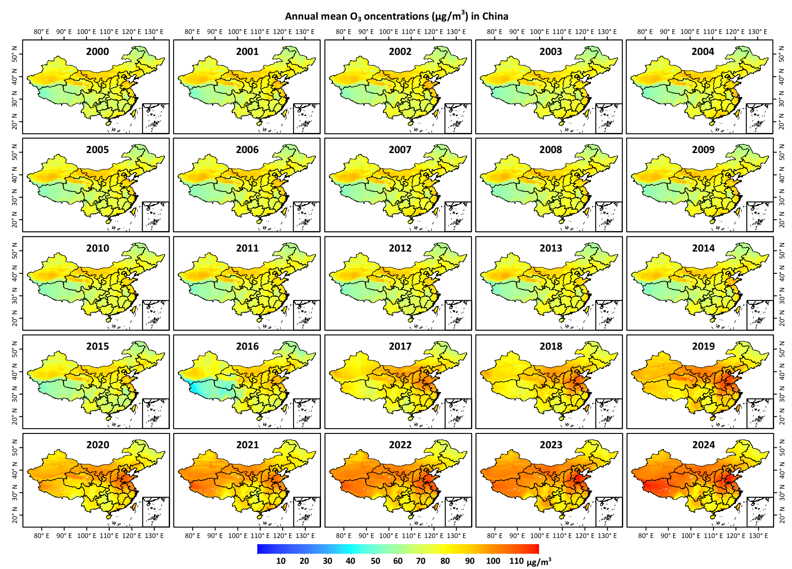

【New updates】Global gapless 1 km PM2.5 dataset (2017-2022) has been released!
Brief Introduction
The ChinaHighAirPollutants (CHAP) dataset refers to the long-term, full-coverage, high-resolution, and high-quality datasets of ground-level air pollutants for China. It is generated from the big data (e.g., ground-based measurements, satellite remote sensing products, atmospheric reanalysis, and model simulations) using artificial intelligence by considering the spatiotemporal heterogeneity of air pollution. The CHAP dataset contains 7 major air pollutants (i.e., PM1, PM2.5, PM10, O3, NO2, SO2, and CO), PM2.5 chemical composition (i.e., SO42-, NO3-, NH4+, Cl-, BC, and OM), and ambient polycyclic aromatic hydrocarbons (PAHs), including 7 carcinogenic PAHs (i.e., BaA, Chr, BbF, BkF, BaP, DahA, IcdP). This CHAP dataset is public and freely open to all users!
Open Platform
【GitHub】, 【Zenodo】, 【国家地球系统科学数据中心】, 【国家青藏高原科学数据中心】
Dataset summary

ChinaHighPM2.5 dataset
[1] Big data (seamless): 1 km, 2000-2022, Daily/Monthly/Yearly (Version 4)
Link: 【Zenodo】, 【国家地球系统科学数据中心: 日, 月, 年】, 【国家青藏高原科学数据中心】
Reference:
Wei, J., Li, Z., Lyapustin, A., Sun, L., Peng, Y., Xue, W., Su, T., and Cribb, M. Reconstructing 1-km-resolution high-quality PM2.5 data records from 2000 to 2018 in China: spatiotemporal variations and policy implications. Remote Sensing of Environment, 2021, 252, 112136. https://doi.org/10.1016/j.rse.2020.112136 (ESI Hot and Highly Cited Paper, Journal Most Cited Articles since 2019/2020, Top 100 Most Cited Chinese Papers Published in International Journals, ESSIC 2022 Best Paper Award)
Wei, J., Li, Z., Cribb, M., Huang, W., Xue, W., Sun, L., Guo, J., Peng, Y., Li, J., Lyapustin, A., Liu, L., Wu, H., and Song, Y. Improved 1 km resolution PM2.5 estimates across China using enhanced space-time extremely randomized trees. Atmospheric Chemistry and Physics, 2020, 20, 3273–3289. https://doi.org/10.5194/acp-20-3273-2020 (ESI Hot and Highly Cited Paper)
[2] Himawari-8: Eastern China, 5 km, 2018, Hourly (Version 1)
Link: 【Zenodo】
Reference: Wei, J., Li, Z., Pinker, R., Wang, J., Sun, L., Xue, W., Li, R., and Cribb, M. Himawari-8-derived diurnal variations of ground-level PM2.5 pollution across China using a fast space-time Light Gradient Boosting Machine (LightGBM). Atmospheric Chemistry and Physics, 2021, 21, 7863–7880. https://doi.org/10.5194/acp-21-7863-2021 (ESI Highly Cited Paper)
ChinaHighPMC dataset
Big data (seamless): 1 km, 2000-2021, Daily/Monthly/Yearly (Version 1)
Link (2013-2020): 【Zenodo】
Reference: Wei, J., Li, Z., Chen, X., Li, C., Sun, Y., Wang, J., Lyapustin, A., Brasseur, G., Jiang, M., Sun, L., Wang, T., Jung, C., Qiu, B., Fang, C., Liu, X., Hao, J., Wang, Y., Zhan, M., Song, X., and Liu, Y. Separating daily 1 km PM2.5 inorganic chemical composition in China since 2000 via deep learning integrating ground, satellite, and model data. Environmental Science & Technology, 2023, 57(46), 18282–18295. https://doi.org/10.1021/acs.est.3c00272

ChinaHighPM1 dataset
Big data (seamless): 1 km, 2000-2021, Daily/Monthly/Yearly (Version 3)
Link: 【Zenodo】
Reference: Wei, J., Li, Z., Guo, J., Sun, L., Huang, W., Xue, W., Fan, T, and Cribb, M. Satellite-derived 1-km-resolution PM1 concentrations from 2014 to 2018 across China. Environmental Science & Technology, 2019, 53(22), 13265-13274. https://doi.org/10.1021/acs.est.9b03258 (ESI Hot and Highly Cited Paper)

ChinaHighPM10 dataset
Big data (seamless): 1 km, 2000-2022, Daily/Monthly/Yearly (Version 4)
Link: 【Zenodo】, 【国家地球系统科学数据中心: 日, 月, 年】, 【国家青藏高原科学数据中心】
Reference: Wei, J., Li, Z., Xue, W., Sun, L., Fan, T., Liu, L., Su, T., and Cribb, M. The ChinaHighPM10 dataset: generation, validation, and spatiotemporal variations from 2013 to 2019 across China. Environment International, 2021, 146, 106290. https://doi.org/10.1016/j.envint.2020.106290 (ESI Highly Cited Paper)

ChinaHighO3 dataset
Big data (seamless): 10 km, 1979-2020, Daily/Monthly/Yearly
Link (2013-2020, Version 1): 【Zenodo】, 【国家地球系统科学数据中心: 日, 月, 年】, 【国家青藏高原科学数据中心】
Big data (seamless): 1 km, 2000-2022, Daily/Monthly/Yearly
Link: Will release soon!
Reference:
[1] Wei, J., Li, Z., Li, K., Dickerson, R., Pinker, R., Wang, J., Liu, X., Sun, L., Xue, W., and Cribb, M. Full-coverage mapping and spatiotemporal variations of ground-level ozone (O3) pollution from 2013 to 2020 across China. Remote Sensing of Environment, 2022, 270, 112775. https://doi.org/10.1016/j.rse.2021.112775 (ESI Hot and Highly Cited Paper)
[2] He, L., Wei, J., Wang, Y., Shang, Q., Liu, J., Yin, Y., Frankerberg, C., Jiang, J., Li, Z., and Yung, Y. Marked impacts of pollution mitigation on crop yields in China. Earth's Future, 2022, 10, e2022EF002936. https://doi.org/10.1029/2022EF002936
ChinaHighNO2 dataset
[1] Big data (seamless): 1 km, 2019-2022, Daily/Monthly/Yearly
Link (2019-2020, Version 1): 【Zenodo】, 【国家地球系统科学数据中心: 日, 月, 年】, 【国家青藏高原科学数据中心】
Reference: Wei, J., Liu, S., Li, Z., Liu, C., Qin, K., Liu, X., Pinker, R., Dickerson, R., Lin, J., Boersma, K., Sun, L., Li, R., Xue, W., Cui, Y., Zhang, C., and Wang, J. Ground-level NO2 surveillance from space across China for high resolution using interpretable spatiotemporally weighted artificial intelligence. Environmental Science & Technology, 2022, 56(14), 9988–9998. https://doi.org/10.1021/acs.est.2c03834 (ESI Highly Cited Paper, Editor Invitation)
[2] Big data (seamless): 10 km, 2008-2018, Daily/Monthly/Yearly
Link (2013-2018, Version 1): 【Zenodo】, 【国家地球系统科学数据中心: 日, 月, 年】, 【国家青藏高原科学数据中心】
Reference: Wei, J., Li, Z., Wang, J., Li, C., Gupta, P., and Cribb, M. Ground-level gaseous pollutants (NO2, SO2, and CO) in China: daily seamless mapping and spatiotemporal variations. Atmospheric Chemistry and Physics, 2023, 23, 1511–1532. https://doi.org/10.5194/acp-23-1511-2023 (ESI Hot and Highly Cited Paper)

ChinaHighSO2 dataset
[1] Big data (seamless): 10 km, 2013-2020, Daily/Monthly/Yearly
Link (2013-2020, Version 1): 【Zenodo】, 【国家地球系统科学数据中心: 日, 月, 年】, 【国家青藏高原科学数据中心】
[2] Big data (seamless): 1 km, 2019-2022, Daily/Monthly/Yearly
Link: Will be publicly available online soon!
Reference: Wei, J., Li, Z., Wang, J., Li, C., Gupta, P., and Cribb, M. Ground-level gaseous pollutants (NO2, SO2, and CO) in China: daily seamless mapping and spatiotemporal variations. Atmospheric Chemistry and Physics, 2023, 23, 1511–1532. https://doi.org/10.5194/acp-23-1511-2023 (ESI Hot and Highly Cited Paper)

ChinaHighCO dataset
[1] Big data (seamless): 10 km, 2013-2020, Daily/Monthly/Yearly
Link (2013-2020, Version 1): 【Zenodo】, 【国家地球系统科学数据中心: 日, 月, 年】, 【国家青藏高原科学数据中心】
[2] Big data (seamless): 1 km, 2019-2022, Daily/Monthly/Yearly
Link: Will be publicly available online soon!
Reference: Wei, J., Li, Z., Wang, J., Li, C., Gupta, P., and Cribb, M. Ground-level gaseous pollutants (NO2, SO2, and CO) in China: daily seamless mapping and spatiotemporal variations. Atmospheric Chemistry and Physics, 2023, 23, 1511–1532. https://doi.org/10.5194/acp-23-1511-2023 (ESI Hot and Highly Cited Paper)

ChinaHighPAH dataset
Big data (seamless): 10 km, 2013-2020, Daily/Monthly/Yearly (Version 1)
Link: 【Zenodo】 (This dataset is only available upon request)
Reference: Wei, J., et al. In preparation.
Brief Introduction
The USHighAirPollutants (USHAP) dataset refers to the long-term, full-coverage, high-resolution, and high-quality datasets of ground-level air pollutants for the Continental United States. Similarly, it is generated from the big data using artificial intelligence by considering the spatiotemporal heterogeneity of air pollution, and now it contains PM2.5 and BC (1 km), and more species of air pollutants will be generated in the future.
USHighPM2.5 dataset
Big data (seamless): 1 km, 2000-2020, Daily/Monthly/Yearly (Version 1)
Link: 【Zenodo】
USHighPMC dataset
Big data (seamless): 1 km, 2000-2020, Daily/Monthly/Yearly (Version 1)
Link: 【Zenodo】
Reference: Wei, J., Wang, J., Li, Z., Kondragunta, S., Anenberg, S., Wang, Y., Zhang, H., Diner, D., Hand, J., Lyapustin, A., Kahn, R., Colarco, P., da Silva, A., and Ichoku, C. Long-term mortality burden trends attributed to black carbon and PM2.5 from wildfire emissions across the continental US from 2000-2020: a deep learning modelling study. The Lancet Planetary Health, 2023.

Brief Introduction
The GlobalHighAirPollutants (GHAP) dataset refers to the long-term, full-coverage, high-resolution, and high-quality datasets of global ground-level air pollutants over land. Similarly, it is generated from the big data using artificial intelligence by considering the spatiotemporal heterogeneity of air pollution, and now it contains PM2.5 (1 km) and NO2 (1 km), and more species of air pollutants will be generated in the future.
GlobalHighPM2.5 dataset
Big data (seamless): 1 km, 2017-2022, Daily/Monthly/Yearly (Version 1)
Link: 【Zenodo】
Reference: Wei, J., Li, Z., Lyapustin, A., Wang, J., Dubovik, O., Schwartz, J., Sun, L., Li, C., Liu, S., and Zhu, T. First close insight into global daily gapless 1 km PM2.5 pollution, driving factors, and health impact. Research Square, 2023, In review. https://doi.org/10.21203/rs.3.rs-2626358/v1

GlobalHighNO2 dataset
Big data (seamless): 1 km, 2017-2022, Daily/Monthly/Yearly (Version 1)
Link: 【Zenodo】
Reference: Wei, J., liu, S., Li, Z., et al. In preparation.

GlobalHighO3 dataset
Big data (seamless): 10 km, 2005-2022, Daily/Monthly/Yearly (Version 1)
Link: 【Zenodo】
Reference: Wei, J., et al. In preparation.
Dataset codes
Data type conversion (from .nc to .tif): [1] Python code; [2] Matlab code; [3] IDL code; [4] R code
News/reports on our dataset
University of Maryland: Li and Wei Published on Air Pollution in China
Beijing Normal University: Dr. Jing Wei released the high-resolution and high-quality air pollution dataset in China
Publications using our dataset (244)
Highlights (10)
Xu, R., Huang, S., Shi, C., et al. Extreme temperature events, fine particulate matter, and myocardial infarction mortality. Circulation, 2023, 148, 312–323. https://doi.org/10.1161/CIRCULATIONAHA.122.063504
Huang, W., Zhou, Y., Chen, X., et al. Individual and joint associations of long-term exposure to air pollutants and cardiopulmonary mortality: a 22-year cohort study in Northern China. The Lancet Regional Health – Western Pacific, 2023, 100776. https://doi.org/10.1016/j.lanwpc.2023.100776
Xu, H., Guo, B., Qian, W., et al. Dietary pattern and long-term effects of particulate matter on blood pressure: a large cross-sectional study in Chinese adults. Hypertension, 2021, 78, 184–194. https://doi.org/10.1161/HYPERTENSIONAHA.121.17205 (Journal High Impact Paper)
Zhang, Y., Wei, J., Shi, Y., et al. Effects of early-life exposure to submicron particulate air pollution on asthma development in Chinese preschool children. Journal of Allergy and Clinical Immunology, 2021, 148, 771-782. https://doi.org/10.1016/j.jaci.2021.02.030
Wu, C., Zhang, Y., Wei, J., et al. Associations of early-life exposure to submicron particulate matter with childhood asthma and wheeze in China. JAMA Network Open, 2022, 5(10), e2236003. https://doi.org/10.1001/jamanetworkopen.2022.36003
Cai, M., Zhang, S., Lin, X., et al. Association of ambient particulate matter pollution of different sizes with in-hospital case fatality among stroke patients in China. Neurology, 2022, 98, 24. https://doi.org/10.1212/WNL.0000000000200546 (ESI Highly Cited Paper)
Ge, E., Gao, J., Wei, X., et al. Effect modification of greenness on PM2.5 associated with all-cause mortality in a multidrug resistant tuberculosis cohort. Thorax, 2022, 77, 1202-1209. http://dx.doi.org/10.1136/thoraxjnl-2020-216819
Guo, J., Zhou, J., Han, R., et al. Association of short-term co-exposure to particulate matter and ozone with mortality risk. Environmental Science & Technology, 2023, 57(42), 15825–15834. https://doi.org/10.1021/acs.est.3c04056 (Supplementary Cover Article)
Cai, M., Wei, J., Zhang, S., et al. Short-term air pollution exposure associated with death from kidney diseases: a nationwide time-stratifed case-crossover study in China from 2015 to 2019. BMC Medicine, 2023, 21, 32. https://doi.org/10.1186/s12916-023-02734-9 (ESI Highly Cited Paper)
Cai, M., Lin, X., Wang, X., et al. Ambient particulate matter pollution of different sizes associated with recurrent stroke hospitalization in China: A cohort study of 1.07 million stroke patients. Science of The Total Environment, 2023, 856, 159104. https://doi.org/10.1016/j.scitotenv.2022.159104 (ESI Highly Cited Paper)
Impact of air pollution on public health (148)
Ai, B., Zhang, S., Fu, J., et al. Associations between green space surrounding kindergartens and hyperactivity behaviors among Chinese preschool children. Future, 2023, 1(1), 27-37. https://doi.org/10.3390/future1010005
Ao, L., Zhou, J., Han, M., et al. The joint effects of physical activity and air pollution on type 2 diabetes in older adults. BMC Geriatrics, 2022, 22, 472. https://doi.org/10.1186/s12877-022-03139-8
Bai, H., Yan, R., Gao, W., et al. Spatial representativeness of PM2.5 monitoring stations and its implication for health assessment. Air Quality, Atmosphere & Health, 2022. https://doi.org/10.1007/s11869-022-01202-2
Cao, Y., Zang, T., Qiu, T., et al. Does PM1 exposure during pregnancy impact the gut microbiota of mothers and neonates?. Environmental Research, 2023, 231, 116304. https://doi.org/10.1016/j.envres.2023.116304
Chen, L., Xie, J., Ma, T., et al. Greenness alleviates the effects of ambient particulate matter on the risks of high blood pressure in children and adolescents. Science of The Total Environment, 2022, 812, 152431. https://doi.org/10.1016/j.scitotenv.2021.152431
Chen, L., Gao, D., Ma, T., et al. Could greenness modify the effects of physical activity and air pollutants on overweight and obesity among children and adolescents? Science of The Total Environment, 2022, 832, 155117. https://doi.org/10.1016/j.scitotenv.2022.155117
Chen, L., Jia, Y., Guo, Y., et al. Could greenness modify the effects of physical activity and air pollutants on overweight and obesity among children and adolescents? Ecotoxicology and Environmental Safety, 2023, 149, 114338. https://doi.org/10.1016/j.ecoenv.2022.114338
Chen, L., Gao, D., Ma, T., et al. Ambient gaseous pollutant exposure and incidence of visual impairment among children and adolescents: fndings from a longitudinal, two‑center cohort study in China. Environmental Science and Pollution Research, 2022, 29, 73262-73270. https://doi.org/10.1007/s11356-022-20025-3
Chen, Q., Chen, Q., Wang, Q., et al. Particulate matter and ozone might trigger deaths from chronic ischemic heart disease. Ecotoxicology and Environmental Safety, 2022, 242, 113931. https://doi.org/10.1016/j.ecoenv.2022.113931
Chen, S., Zhang, Y., Wang, Y., et al. Long-term particulate matter exposure and the risk of neurological hospitalization: Evidence from causal inference of a large longitudinal cohort in South China. Chemosphere, 2023, 345, 140397. https://doi.org/10.1016/j.chemosphere.2023.140397
Chen, Y., Hu, Y., Li, R., et al. Association of residential greenness with chronotype among children Science of The Total Environment, 2023, 903, 166011. https://doi.org/10.1016/j.scitotenv.2023.166011
Cheng, J., Zheng, H., Wei, J., et al. Short-term residential exposure to air pollution and risk of acute myocardial infarction deaths at home in China. Environmental Science and Pollution Research, 2023. https://doi.org/10.1007/s11356-023-27813-5
Deng, P., Tang, H., Zhu, L., et al. Association of long-term ambient fine particulate matter (PM2.5) and incident non-alcoholic fatty liver disease in Chinese adults. Environmental Pollution, 2023, 329, 121666. https://doi.org/10.1016/j.envpol.2023.121666
Deng, X., Wang, Q., Shi, C., et al. Heat wave exposure and semen quality in sperm donation volunteers: A retrospective longitudinal study in south China. Environmental Research, 2023, 236, 116665. https://doi.org/10.1016/j.envres.2023.116665
Duan, J., Li, Y., Li, S., et al. Association of long-term ambient fine particulate matter (PM2.5) and incident CKD: A prospective cohort study in China. American Journal of Kidney Diseases, 2023, 80(5), 638-647.e1. https://doi.org/10.1016/j.envres.2023.115405
Fan, Z., Li, Y., Wei, J., et al. Long-term exposure to fine particulate matter and site-specific cancer mortality: A difference-in-differences analysis in Jiangsu province, China. Environmental Research, 2023, 222, 115405. https://doi.org/10.1016/j.envres.2023.115405
Feng, C., Yu, B., Fei, T., et al. Association between residential greenness and all-cause mortality and the joint mediation effect of air pollutants among old people with disability: A prospective cohort study Science of The Total Environment, 2023, 857, 159604. https://doi.org/10.1016/j.scitotenv.2022.159604
Feng, S., Meng, Q., Guo, B., et al. Joint exposure to air pollution, ambient temperature and residential greenness and their association with metabolic syndrome (MetS): A large population-based study among Chinese adults. Environmental Research, 2022, 214, 113699. https://doi.org/10.1016/j.envres.2022.113699
Feng, Y., Wei, J., Hu, M., et al. Lagged effects of exposure to air pollutants on the risk of pulmonary tuberculosis in a highly polluted region. International Journal of Environmental Research and Public Health, 2022, 19, 5752. https://doi.org/10.3390/ijerph19095752
Geng, L., Yang, Y., Chen, Y., et al. Association between ambient temperature exposure and pregnancy outcomes in patients undergoing in vitro fertilization in Shanghai, China: a retrospective cohort study Human Reproduction, 2023, dead192. https://doi.org/10.1093/humrep/dead192
Guan, Q., Zhu, C., Zhang, G., et al. Association of land urbanization and type 2 diabetes mellitus prevalence and mediation of greenness and physical activity in Chinese adults Environmental Pollution, 2023, 337, 122579. https://doi.org/10.1016/j.envpol.2023.122579
Guo, H., Wei, J., Li, X., et al. Do socioeconomic factors modify the effects of PM1 and SO2 on lung cancer incidence in China? Science of the Total Environment, 2021, 756, 143998. https://doi.org/10.1016/j.scitotenv.2020.143998
Guo, H., Liu, J., and Wei, J. Ambient ozone, PM1 and female lung cancer incidence in 436 Chinese counties. International Journal of Environmental Research and Public Health, 2021, 18(19), 10386. https://doi.org/10.3390/ijerph181910386
Guo, H., Li, X., Wei, J., et al. Smaller particular matter, larger risk of female lung cancer incidence? Evidence from 436 Chinese counties. BMC Public Health, 2022, 22, 344. https://doi.org/10.1186/s12889-022-12622-1
Guo, H., Li, X., Li, W., et al. Climatic modification effects on the association between PM1 and lung cancer incidence in China. BMC Public Health, 2021, 21, 880. https://doi.org/10.1186/s12889-021-10912-8
Guo, Q., Zhao, Y., Zhao, J., et al. Physical activity attenuated the associations between ambient air pollutants and metabolic syndrome (MetS): A nationwide study across 28 provinces. Environmental Pollution, 2023, 315, 120348. https://doi.org/10.1016/j.envpol.2022.120348
Han, S., Zhang, F., Yu, H., et al. Systemic inflammation accelerates the adverse effects of air pollution on metabolic syndrome: Findings from the China health and Retirement Longitudinal Study (CHARLS). Environmental Research, 2022, 215, 114340. https://doi.org/10.1016/j.envres.2022.114340
Hao, Z., He, C., Li, J., et al. Long-term exposure to ambient fine particles and heart rate in Northwestern China: Findings from 1.8 million adults of the Kashgar Prospective Cohort Study (KPCS). Atmosphere, 2023, 14, 394. https://doi.org/10.3390/atmos14020394
He, F., Wei, J., Dong, Y., et al. Associations of ambient temperature with mortality for ischemic and hemorrhagic stroke and the modification effects of greenness in Shandong Province, China. Science of The Total Environment, 2022, 851, 158046. https://doi.org/10.1016/j.scitotenv.2022.158046
Huang, Z., Cao, C., Xu, M., and Yang, X. Impact of environmental exposure on chronic diseases in China and assessment of population health vulnerability. ISPRS International Journal of Geo-Information, 2023, 12, 155. https://doi.org/10.3390/ijgi12040155
Hu, K., Zhang, Z., Li, Y., et al. Urban overall and visible greenness and diabetes among older adults in China. Landscape and Urban Planning, 2023, 240, 104881. https://doi.org/10.1016/j.landurbplan.2023.104881
Hu, K., Li, W., Zhang, Y., et al. Association between outdoor artificial light at night and sleep duration among older adults in China: A cross-sectional study. Environmental Research, 2022, 212, 113343. https://doi.org/10.1016/j.envres.2022.113343
Hu, M., Wei, J., Hu, Y., et al. Long-term effect of submicronic particulate matter (PM1) and intermodal particulate matter (PM1-2.5) on incident dyslipidemia in China: A nationwide 5-year cohort study. Environmental Research, 2023, 216, 114860. https://doi.org/10.1016/j.envres.2022.114860
Hu, X., Nie, Z., Ou, Y., et al. Long-term exposure to ambient air pollution, circadian syndrome and cardiovascular disease: A nationwide study in China. Science of The Total Environment, 2023, 868, 161696. https://doi.org/10.1016/j.scitotenv.2023.161696
Hu, Y., Chen, Y., Liu, S., et al. Residential greenspace and childhood asthma: An intra-city study. Science of The Total Environment, 2023, 857, 159792. https://doi.org/10.1016/j.scitotenv.2022.159792
Hu, Y., Chen, Y., Liu, S., et al. Higher greenspace exposure is associated with a decreased risk of childhood asthma in Shanghai – A megacity in China. Ecotoxicology and Environmental Safety, 2023, 256, 114868. https://doi.org/10.1016/j.ecoenv.2023.114868
Jiang, H., Zhang, S., Yao, X., et al. Does physical activity attenuate the association between ambient PM2.5 and physical function?. Science of The Total Environment, 2023, 874, 162501. https://doi.org/10.1016/j.scitotenv.2023.162501
Jiang, Q., Luo, X., Zheng, R., et al. Exposure to ambient air pollution with depressive symptoms and anxiety symptoms among adolescents: A national population-based study in China. Journal of Psychiatric Research, 2023, 164, 1-7. https://doi.org/10.1016/j.jpsychires.2023.05.077
Jiang, Y., Zhuo, B., Guo, B., et al. Living near greenness is associated with higher bone strength: A large cross-sectional epidemiological study in China. Science of The Total Environment, 2022, 831, 155393. https://doi.org/10.1016/j.scitotenv.2022.155393
Li, H., Liang, L., Zhang, S., et al. Short-term ambient particulate matter pollution of different sizes and respiratory hospital admission in the Beibu Gulf area of Southern China. Atmospheric Environment, 2023, 294, 119524. https://doi.org/10.1016/j.atmosenv.2022.119524
Li, J., Tang, W., Li, S., et al. Ambient PM2.5 and its components associated with 10-year atherosclerotic cardiovascular disease risk in Chinese adults. Ecotoxicology and Environmental Safety, 2023, 263, 115371. https://doi.org/10.1016/j.ecoenv.2023.115371
Li, J., Luan, Q., Li, B., et al. Outdoor environmental exposome and the burden of tuberculosis: Findings from nearly two million adults in northwestern China. Journal of Hazardous Materials, 2023, 459, 132222. https://doi.org/10.1016/j.jhazmat.2023.132222
Li, M., Edgell, R., Wei, J., et al. Air pollution and stroke hospitalization in the Beibu Gulf Region of China: A case-crossover analysis. Ecotoxicology and Environmental Safety, 2023, 255, 114814. https://doi.org/10.1016/j.ecoenv.2023.114814
Li, S., Meng, Q., Laba, C., et al. Associations between long-term exposure to ambient air pollution and renal function in Southwest China: The China Multi-Ethnic Cohort (CMEC) study. Ecotoxicology and Environmental Safety, 2022, 242, 113851. https://doi.org/10.1016/j.ecoenv.2022.113851
Li, S., Wei, J., Hu, Y., et al. Long-term effect of intermediate particulate matter (PM1-2.5) on incident asthma among middle-aged and elderly adults: A national population-based longitudinal study. Science of The Total Environment, 2023, 859, 160204. https://doi.org/10.1016/j.scitotenv.2022.160204
Li, Y., Li, B., Liao, H., et al. Changes in PM2.5-related health burden in China's poverty and non-poverty areas during 2000–2020: A health inequality perspective. Science of The Total Environment, 2023, 859, 160517. https://doi.org/10.1016/j.scitotenv.2022.160517
Li, Y., Yuan, X., Wei, J., et al. Long-term exposure to ambient air pollution and serum liver enzymes in older adults: a population-based longitudinal study. Annals of Epidemiology, 2022, 74, 1-7. https://doi.org/10.1016/j.annepidem.2022.05.011
Li, Y., Yuan, X., Wei, J., et al. Long-term exposure to ambient particulate matter and kidney function in older adults. Atmospheric Environment, 2023, 295, 119535. https://doi.org/10.1016/j.atmosenv.2022.119535
Li, Z., Lv, S., Lu, F., et al. Causal associations of air pollution with cardiovascular disease and respiratory diseases among elder diabetic patients. GeoHealth, 2023, 7(6), e2022GH000730. https://doi.org/10.1029/2022GH000730
Lin, L., Chen, Y., Wei, J., et al. The associations between residential greenness and allergic diseases in Chinese toddlers: A birth cohort study. Environmental Research, 2022, 214, 114003. https://doi.org/10.1016/j.envres.2022.114003
Lin, J., Yang, Y., Nuermaimaiti, A., et al. Impact of ambient temperature on adverse pregnancy outcomes: a birth cohort study in Fuzhou, China. Fronties in Public Health, 2023, 11, 1183129. https://doi.org/10.3389/fpubh.2023.1183129
Liu, C., Yu, B., Liu, C., et al. Effect of neighbourhood greenness on the association between air pollution and risk of stroke first onset: A case-crossover study in shandong province, China. International Journal of Hygiene and Environmental Health, 2023, 254, 114262. https://doi.org/10.1016/j.ijheh.2023.114262
Liu, M., Tang, W., Zhang, Y., et al. Urban-rural differences in the association between long-term exposure to ambient air pollution and obesity in China. Environmental Research, 2021, 201, 111597. https://doi.org/10.1016/j.envres.2021.111597
Liu, J., Li, S., Xiong, Y., et al. Uncertainty analysis of premature death estimation under barious open and PM2.5 datasets. Frontiers in Environmental Science, 2022, 10, 934281. https://doi.org/10.3389/fenvs.2022.934281
Liu, Q., Pan, L., Yang, T., et al. Association between long-term exposure to ambient particulate matter and pulmonary function among men and women in typical areas of South and North China. Frontiers in Public Health, 2023, 11, 1170584. https://doi.org/10.3389/fpubh.2023.1170584
Liu, B., Wang, L., Zhang, L., et al. Analysis of severe ozone–related human health and weather influence over China in 2019 based on a high-resolution dataset. Environmental Science and Pollution Research, 2023, 30, 111536–111551. https://doi.org/10.1007/s11356-023-30178-4
Liu, S., Wei, H., He, J., et al. Assessment of urban population health resilience guided by cardiovascular and cerebrovascular diseases: A case study of Henan Province. Environmental Impact Assessment Review, 2023, 103, 107248. https://doi.org/10.1016/j.eiar.2023.107248
Liu, T., Zhou, Y., Wei, J., et al. Association between short-term exposure to ambient air pollution and dementia mortality in Chinese adults. Science of the Total Environment, 2022, 849, 157860. https://doi.org/10.1016/j.scitotenv.2022.157860
Liu, T., Shi, C., Wei, J., et al. Extreme temperature events and dementia mortality in Chinese adults: a population-based, case-crossover study. International Journal of Epidemiology, 2023, dyad119. https://doi.org/10.1093/ije/dyad119
Liu, W., Cai, M., Long, Z., et al. Association between ambient sulfur dioxide pollution and asthma mortality: Evidence from a nationwide analysis in China. Ecotoxicology and Environmental Safety, 2023, 249, 114442. https://doi.org/10.1016/j.ecoenv.2022.114442
Liu, W., Wei, J., Cai, M., et al. Particulate matter pollution and asthma mortality in China: A nationwide time-stratified case-crossover study from 2015 to 2020. Chemosphere, 2022, 308, 136316. https://doi.org/10.1016/j.chemosphere.2022.136316
Liu, Y., Xu, Y., Li, Y., and Wei, H.. Identifying the environmental determinants of lung cancer: A case study of Henan, China. GeoHealth, 2023, 7, e2023GH000794. https://doi.org/10.1029/2023GH000794
Lu, J., Wu, K., Ma, X., et al. Short-term effects of ambient particulate matter (PM1, PM2.5 and PM10) on influenza-like illness in Guangzhou, China. International Journal of Hygiene and Environmental Health, 2023, 247, 114074. https://doi.org/10.1016/j.ijheh.2022.114074
Lu, Y., Yin, P., Wang, J., et al. Light at night and cause-specific mortality risk in Mainland China: a nationwide observational study. BMC Medicine, 2023, 21, 95. https://doi.org/10.1186/s12916-023-02822-w
Luo, M., Xie, X., Wu, J., et al. Association of ambient PM10 and PM2.5 with coronary stenosis measured using selective coronary angiography. Ecotoxicology and Environmental Safety, 2023, 262, 115338. https://doi.org/10.1016/j.ecoenv.2023.115338
Lv, S., Shi, Y., Xue, Y., et al. Long-term effects of particulate matter on incident cardiovascular diseases in middle-aged and elder adults: The CHARLS cohort study. Ecotoxicology and Environmental Safety, 2023, 262, 115181. https://doi.org/10.1016/j.ecoenv.2023.115181
Lv, S., Liu, X., Li, Z., et al. Causal effect of PM1 on morbidity of cause-specific respiratory diseases based on a negative control exposure. Environmental Research, 2023, 216, 114746. https://doi.org/10.1016/j.envres.2022.114746
Ma, X., Duan, H., Zhang, H., et al. Short-term effects of PM1, PM2.5, and PM2.5 constituents on myocardial infarction mortality in qingdao, China: A time-stratified case-crossover analysis. Atmospheric Environment, 2023, 294, 119478. https://doi.org/10.1016/j.envres.2022.114746
Ma, X., Duan, H., Zhang, H., et al. Estimating future PM2.5-attributed acute myocardial infarction incident cases under climate mitigation and population change scenarios in Shandong Province, China. Ecotoxicology and Environmental Safety, 2023, 256, 114893. https://doi.org/10.1016/j.ecoenv.2023.114893
Ma, Y., Zhang, Y., Wang, W., et al. Estimation of health risk and economic loss attributable to PM2.5 and O3 pollution in Jilin Province, China. Scientific Reports, 2023, 13, 17717. https://doi.org/10.1038/s41598-023-45062-x
Mei, Y., Li, A., Zhao, J., et al. Association of long-term air pollution exposure with the risk of prediabetes and diabetes: Systematic perspective from inflammatory mechanisms, glucose homeostasis pathway to preventive strategies. Environmental Research, 2023, 216, 114472. https://doi.org/10.1016/j.envres.2022.114472
Niu, Z., Duan, Z., Wei, J., et al. Associations of long-term exposure to ambient ozone with hypertension, blood pressure, and the mediation effects of body mass index: A national cross-sectional study of middle-aged and older adults in China. Ecotoxicology and Environmental Safety, 2022, 242, 113901. https://doi.org/10.1016/j.ecoenv.2022.113901
Pan, X., Hong, F., Li, S., et al. Long-term exposure to ambient PM2.5 constituents is associated with dyslipidemia in Chinese adults Ecotoxicology and Environmental Safety, 2023, 163, 115384. https://doi.org/10.1016/j.ecoenv.2023.115384
Qiu, T., Zang, T., Fang, Q., et al. Cumulative and lagged effects of varying-sized particulate matter exposure associates with toddlers’ gut microbiota Environmental Pollution, 2023, 336, 122389. https://doi.org/10.1016/j.envpol.2023.122389
Song, J., Du, P., Yi, W., et al. Using an exposome-wide approach to explore the impact of urban environments on blood pressure among adults in Beijing–Tianjin–Hebei and surrounding areas of China. Environmental Science & Technology, 2022, 56, 8395−8405. https://doi.org/10.1021/acs.est.1c08327
Song, J., Ding, Z., Zheng, H., et al. Short-term PM1 and PM2.5 exposure and asthma mortality in Jiangsu Province, China: What’s the role of neighborhood characteristics? Ecotoxicology and Environmental Safety, 2022, 241, 113765. https://doi.org/10.1021/acs.est.1c08327
Su, X., Zhang, S., Lin, Q., et al. Prenatal exposure to air pollution and neurodevelopmental delay in children: A birth cohort study in Foshan, China. Science of the Total Environment, 2022, 807, 151658. https://doi.org/10.1016/j.scitotenv.2021.151658
Sun, T., Wang, Z., Lei, F., et al. Long-term exposure to air pollution and increased risk of atrial fibrillation prevalence in China. International Journal of Cardiology, 2023, 378, 130-137. https://doi.org/10.1016/j.ijcard.2023.02.039
Sun, Q., Chen, Y., Ye, F., et al. Association of hypothyroidism during pregnancy with preconception and early pregnancy exposure to ambient particulate matter. Environmental Science and Pollution Research , 2023, 30, pages88084–88094. https://doi.org/10.1007/s11356-023-28683-7
Sun, Y., Zhang, M., Chen, S., et al. Potential impact of ambient temperature on maternal blood pressure and hypertensive disorders of pregnancy: A nationwide multicenter study based on the China birth cohort. Environmental Research, 2023, 227, 115733. https://doi.org/10.1016/j.envres.2023.115733
Tian, Y., Wu, J., Wu, Y., et al. Short-term exposure to reduced specific-size ambient particulate matter increase the risk of cause-specific cardiovascular disease: A national-wide evidence from hospital admissions. Ecotoxicology and Environmental Safety, 2023, 263, 115327. https://doi.org/10.1016/j.ecoenv.2023.115299
Tan, J., Chen, N., Bai, J., et al. Ambient air pollution and the health-related quality of life of older adults: Evidence from Shandong China. Journal of Environmental Management, 2023, 336, 117619. https://doi.org/10.1016/j.ijcard.2023.02.039
Wang, C., Wang, Y., Shi, Z., et al. Effects of using different exposure data to estimate changes in premature mortality attributable to PM2.5 and O3 in China. Environmental Pollution, 2021, 285, 117242. https://doi.org/10.1016/j.envpol.2021.117242
Wang, H., Yin, P., Fan, W., et al. Mortality risk associated with short-term exposure to particulate matter in China: estimating error and implication. Environmental Science & Technology, 2021, 55(2), 1110–1121. https://doi.org/10.1021/acs.est.0c05095
Wang, J., Shen, S., Yan, B., et al. Individual exposure of ambient particulate matters and eosinophilic chronic rhinosinusitis with nasal Polyps: Dose-Response, mediation effects and recurrence prediction. Environment International, 2023, 177, 108031. https://doi.org/10.1016/j.envint.2023.108031
Wang, J., Yang, T., Xu, Z., et al. Greenness and asthma in the middle-aged and elderly population in a prospective cohort study — China, 2011–2018. China CDC Weekly, 2022, 4(42), 931-935.
Wang, L., Xu, T., Wang, Q., et al. Exposure to fine particulate matter constituents and human semen quality decline: a multicenter study. Environmental Science & Technology, 2023, 57(35), 13025–13035. https://doi.org/10.1021/acs.est.3c03928
Wang, L., Chen, G., Pan, Y., et al. Association of long-term exposure to ambient air pollutants with blood lipids in Chinese adults: The China Multi-Ethnic Cohort Study. Environmental Research, 2021, 197, 111174. https://doi.org/10.1016/j.envres.2021.111174
Wang, L., Zhang, J., Wei, J., et al. Association of ambient air pollution exposure and its variability with subjective sleep quality in China: A multilevel modeling analysis. Environmental Pollution, 2022, 312, 120020. https://doi.org/10.1016/j.envpol.2022.120020
Wang, R., Xu, R., Wei, J., et al. Short-Term exposure to ambient air pollution and hospital admissions for sequelae of stroke in Chinese older adults. GeoHealth, 2022, 11(6), e2022GH000700. https://doi.org/10.1029/2022GH000700
Wang, X., Xu, Z., Ho, H., et al. Ambient particular matters (PM1, PM2.5, PM10) and childhood pneumonia: the smaller particle, the greater short-term impact? Science of the Total Environment, 2021, 772, 145509. https://doi.org/10.1016/j.scitotenv.2021.145509
Wang, X., Guo, B., Yang, X., et al. Role of liver enzymes in the relationship between particulate matter exposure and diabetes risk: a longitudinal cohort study. Journal of Clinical Endocrinology & Metabolism, 2022, dgac438. https://doi.org/10.1210/clinem/dgac438
Wang, Y., Cao, R., Xu, Z., et al. Long-term exposure to ozone and diabetes incidence: A longitudinal cohort study in China. Science of the Total Environment, 2022, 816, 151634. https://doi.org/10.1016/j.scitotenv.2021.151634
Wang, Y., and Chang, Q. The role of urban parks in affecting health outcomes and the differences between vulnerable groups: Evidence from the central city of Beijing. Urban Forestry & Urban Greening, 2023, 89, 128110. https://doi.org/10.1016/j.ufug.2023.128110
Wang, Y., Du, Y., Fang, J., et al. A random forest model for daily PM2.5 personal exposure assessment for a Chinese Cohort. Environmental Science & Technology Letters, 2022, 9(5), 466–472. https://doi.org/10.1021/acs.estlett.1c00970
Wang, Y., Jiang, J., Chen, L., et al. Is COPD mortality in South China causally linked to the long-term PM1 exposure? Evidence from a large community-based cohort. Ecotoxicology and Environmental Safety, 2023, 263, 115299. https://doi.org/10.1016/j.ecoenv.2023.115299
Wang, Y., Luo, S., Wei, J., et al. Ambient NO2 exposure hinders long-term survival of Chinese middle-aged and older adults. Science of the Total Environment, 2023, 855, 158784. https://doi.org/10.1016/j.scitotenv.2022.158784
Wang, Y., Wei, J., Zhang, Y., et al. Estimating causal links of long-term exposure to particulate matters with all-cause mortality in South China. Environment International, 2023, 171, 107726. https://doi.org/10.1016/j.envint.2022.107726
Wen, F., Li, B., Cao, H., et al. Association of long-term exposure to air pollutants mixture and incident cardiovascular disease in a highly polluted region of China. Environmental Pollution, 2023, 328, 121647. https://doi.org/10.1016/j.envpol.2023.121647
Wu, H., Zhang, B., Wei, J., et al. Short-term effects of exposure to ambient PM1, PM2.5, and PM10 on ischemic and hemorrhagic stroke incidence in Shandong Province, China. Environmental Research, 2022, 212, 113350. https://doi.org/10.1016/j.envres.2022.113350
Wu, H., Zhang, Y., Zhao, M., et al. Short-term effects of exposure to ambient PM1 on blood pressure in children and adolescents aged 9 to 18 years in Shandong Province, China. Atmospheric Environment, 2022, 283, 119180. https://doi.org/10.1016/j.atmosenv.2022.119180
Wu, H., Zhang, Y., Wei, J., et al. Association between short-term exposure to ambient PM1 and PM2.5 and forced vital capacity in Chinese children and adolescents. Environmental Science and Pollution Research, 2022, 29, 71665–71675. https://doi.org/10.1007/s11356-022-20842-6
Wu, H., Lu, Z., Wei, J., et al. Effects of the COVID-19 lockdown on air pollutant levels and associated reductions in ischemic stroke incidence in Shandong Province, China. Fronties in Public Health, 2022, 10, 876615. https://doi.org/10.3389/fpubh.2022.876615
Wu, J., Guo, B., Guan, H., et al. The association between long-term exposure to ambient air pollution and bone strength in China. Journal of Clinical Endocrinology & Metabolism, 2021, 106, e5097–e5108. https://doi.org/10.1210/clinem/dgab462
Wu, Y., Zhang, T., Wang, Y., et al. Spatial heterogeneity in health risks of illness-related absenteeism associated with PM2.5 exposure for elementary students. Environmental Research, 2022, 212, 113473. https://doi.org/10.1016/j.envres.2022.113473
Xie, Y., Wang, Y., Zhang, Y., et al. Substantial health benefits of strengthening guidelines on indoor fine particulate matter in China. Environment International, 2022, 160, 107082. https://doi.org/10.1016/j.envint.2022.107082
Xing, Y., Gao, X., Li, Q., et al. Associations between exposure to ambient particulate matter and advanced liver fibrosis in Chinese MAFLD patients. Journal of Hazardous Materials, 2023, 460, 132501. https://doi.org/10.1016/j.jhazmat.2023.132501
Xu, H., Yang, T., Guo, B., et al. Increased allostatic load associated with ambient air pollution acting as a stressor: Cross-sectional evidence from the China multi-ethnic cohort study. Science of the Total Environment, 2022, 831, 155658. https://doi.org/10.1016/j.scitotenv.2022.155658
Xu, L., Xu, R., Ye, Y., et al. Short-term exposure to ambient air pollution and hospital admissions for angina among older adults in South China. Atmospheric Environment, 2024, 317, 120198. https://doi.org/10.1016/j.atmosenv.2023.120198
Xu, R., Wei, J., Liu, T., et al. Association of short-term exposure to ambient PM1 with total and cause-specific cardiovascular disease mortality. Environment International, 2022, 169, 107519. https://doi.org/10.1016/j.envint.2022.107519
Xu, R., Shi, C., Wei, J., et al. Cause-specific cardiovascular disease mortality attributable to ambient temperature: A time-stratified case-crossover study in Jiangsu province, China. Ecotoxicology and Environmental Safety, 2022, 236, 113498. https://doi.org/10.1016/j.ecoenv.2022.113498
Xu, R., Wang, Q., Wei, J., et al. Association of short-term exposure to ambient air pollution with mortality from ischemic and hemorrhagic stroke. European Journal of Neurology, 2022, 29, 1994-2005. https://doi.org/10.1111/ene.15343
Xu, R., Tian, Q., Wei, J., et al. Short-term exposure to ambient air pollution and readmissions for heart failure among 3660 post-discharge patients with hypertension in older Chinese adults. Journal of Epidemiology & Community Health, 2022, 76, 984-990. http://dx.doi.org/10.1136/jech-2022-219676
Xu, J., Zhou, J., Luo, P., et al. Associations of long-term exposure to ambient air pollution and physical activity with insomnia in Chinese adults. Science of the Total Environment, 2021, 792, 148197. https://doi.org/10.1016/j.scitotenv.2021.148197
Yan, M., Hou, F., Xu, J., et al. The impact of prolonged exposure to air pollution on the incidence of chronic non-communicable disease based on a cohort in Tianjin. Environmental Research, 2022, 215, 114251. https://doi.org/10.1016/j.envres.2022.114251
Yang, T., Wang, J., Xu, Z., et al. Associations between greenness and blood pressure and hypertension in Chinese middle-aged and elderly population: A longitudinal study. Environmental Research, 2022, 212, 113558. https://doi.org/10.1016/j.envres.2022.113558
Ye, T., Guo, Y., Abramson, M., et al. Impacts of traffic-related particulate matter pollution on semen quality: A retrospective cohort study relying on the random forest model in a megacity of South China. Science of the Total Environment, 2023, 858, 159952. https://doi.org/10.1016/j.scitotenv.2022.159952
Yu, X., Wang, Q., Wei, J., et al. Impacts of traffic-related particulate matter pollution on semen quality: A retrospective cohort study relying on the random forest model in a megacity of South China. Science of the Total Environment, 2022, 851, 158387. https://doi.org/10.1016/j.scitotenv.2022.158387
Yu, Z., Feng, Y., Chen, Y., et al. Green space, air pollution and gestational diabetes mellitus: A retrospective cohort study in central China. Ecotoxicology and Environmental Safety, 2023, 249, 114457. https://doi.org/10.1016/j.ecoenv.2022.114457
Yuan, Y., Zhou, P., Peng, M., et al. Residential greenness mitigates mortality risk from short-term airborne particulate exposure: An individual-level case-crossover study. Ecotoxicology and Environmental Safety, 2023, 264, 115451. https://doi.org/10.1016/j.ecoenv.2023.115451
Zhang, C., Yang, J., Wei, J., et al. Individual ambient ozone exposure during pregnancy and adverse birth outcomes: Exploration of the potentially vulnerable windows. Journal of Hazardous Materials, 2024, 464, 132945. https://doi.org/10.1016/j.jhazmat.2023.132945
Zhang, F., Li, T., Chen, B., et al. Air pollution weaken your muscle? Evidence from a cross-sectional study on sarcopenia in central China. Ecotoxicology and Environmental Safety, 2023, 258, 114962. https://doi.org/10.1016/j.ecoenv.2023.114962
Zhang, F., Tang, H., Zhao, D., et al. Short-term exposure to ambient particulate matter and mortality among HIV/AIDS patients: Case-crossover evidence from all counties of Hubei province, China. Science of The Total Environment, 2023, 857, 159410. https://doi.org/10.1016/j.scitotenv.2022.159410
Zhang, F., Wan, Y., Tang, H., et al. Submicronic particulate matter (PM1), a “neglected killer” for HIV/AIDS patients in Hubei, China: Results from a cohort study from 2001 to 2020. Science of The Total Environment, 2023, 905, 167093. https://doi.org/10.1016/j.scitotenv.2023.167093
Zhang, J., Zhang, F., Xin, C., et al. Associations of long-term exposure to air pollution, physical activity with blood pressure and prevalence of hypertension: the China Health and Retirement Longitudinal Study. Frontiers in Public Health, 2023, 11, 1137118. https://doi.org/10.3389/fpubh.2023.1137118
Zhang, L., Yin, W., Yu, W., et al. Environmental exposure to outdoor artificial light at night during pregnancy and fetal size: A prospective cohort study. Science of the Total Environment, 2023, 883, 163521. https://doi.org/10.1016/j.scitotenv.2023.163521
Zhang, T., Wu, Y., Guo, Y., et al. Risk of illness-related school absenteeism for elementary students with exposure to PM2.5 and O3. Science of the Total Environment, 2022, 842, 156824. https://doi.org/10.1016/j.scitotenv.2022.156824
Zhang, W., Peng, W., Cai, J., et al. Residential surrounding greenness is associated with improved lung function in adults: a cross-sectional study in eastern China. BMC Public Health, 2023, 23, 632. https://doi.org/10.1186/s12889-023-15473-6
Zhang, X., Fan, Z., Wang, Q., et al. Association between ambient temperature and semen quality among sperm donation volunteers in South China. Environment International, 2023, 172, 107809. https://doi.org/10.1016/j.envint.2023.107809
Zhang, X., Zhang, F., Gao, Y., et al. Synergic effects of PM1 and thermal inversion on the incidence of small for gestational age infants: a weekly-based assessment. Journal of Exposure Science & Environmental Epidemiology, 2023, 1-11. https://doi.org/10.1038/s41370-023-00542-0
Zhang, Y., Wei, J., Liu, C., et al. Association between ambient PM1 and semen quality: A cross-sectional study of 27,854 men in China. Environment International, 2023, 175, 107919. https://doi.org/10.1038/s41370-023-00542-0
Zhang, Y., Ke, L., Fu, Y., Di, Q., and Ma, X. Physical activity attenuates negative effects of short-term exposure to ambient air pollution on cognitive function. Environment International, 2022, 160, 107070. https://doi.org/10.1016/j.envint.2021.107070
Zhang, Y., Li, Z., Wei, J., et al. Longitudinal association between ambient nitrogen dioxide exposure and all-cause mortality in Chinese adults. Journal of Advanced Research, 2022, 41, 13-22. https://doi.org/10.1016/j.jare.2022.02.007
Zhang, Y., Yin, Z., Li, S., et al. Ambient PM2.5, Ozone and Mortality in Chinese Older Adults: A Nationwide Cohort Analysis (2005–2018). Journal of Hazardous Materials, 2023, 454, 131539. https://doi.org/10.1016/j.jhazmat.2023.131539
Zhang, Y., Zhang, Y., Chen, S., et al. Association of SO2/CO exposure and greenness with high blood pressure in children and adolescents: A longitudinal study in China. Frontiers in Public Health, 2023, 11, 1097510. https://doi.org/10.3389/fpubh.2023.1097510
Zhao, J., Wang, X., Li, Z., et al. Effect of gaseous pollutant and greenness exposure on mortality during treatment of newly treated tuberculosis patients: a provincial population-based cohort study. Environmental Science and Pollution Research, 2023, 30, 98195–98210. https://doi.org/10.1007/s11356-023-29256-4
Zheng, M., Yin, Z., Wei, J., et al. Submicron particle exposure and stroke hospitalization: An individual-level case-crossover study in Guangzhou, China, 2014–2018. Science of The Total Environment, 2023, 886, 163988. https://doi.org/10.1016/j.scitotenv.2023.163988
Zheng, H., Yi, W., Ding, Z., et al. Evaluation of life expectancy loss associated with submicron and fine particulate matter (PM1 and PM2.5) air pollution in Nanjing, China. Environmental Science and Pollution Research, 2021, 28, 68134–68143. https://doi.org/10.1007/s11356-021-15244-z
Zhou, W., Wang, Q., Li, R., et al. The effects of heatwave on cognitive impairment among older adults: Exploring the combined effects of air pollution and green space. Science of The Total Environment, 2023, 904, 166534. https://doi.org/10.1016/j.scitotenv.2023.166534
Zhou, W., Wen, Z., Peng, W., et al. Association of ambient particulate matter with hospital admissions, length of hospital stay, and hospital costs due to cardiovascular disease: time-series analysis based on data from the Shanghai Medical Insurance System from 2016 to 2019. Environmental Sciences Europe, 2023, 46, 46. https://doi.org/10.1186/s12302-023-00754-z
Zhu, Y., Ma, Y., Tang, L., et al. The adverse impact of maternal ozone exposure on fetal growth in utero and the interaction with residential greenness. Journal of Hazardous Materials, 2023, 461, 132562. https://doi.org/10.1016/j.jhazmat.2023.132562
Zong, J., Wang, L., Lu, C., et al. Mapping health vulnerability to short-term summer heat exposure based on a directional interaction network: Hotspots and coping strategiess. Science of The Total Environment, 2023, 881, 163401. https://doi.org/10.1016/j.scitotenv.2023.163401
蔡 军, 张文浩, 张珮瑶, 等. 蚌埠市某区2015—2020年空气污染对恶性肿瘤死亡风险影响的队列研究. 中华全科医学, 2023, 21(5), 857-860.
蒋 叶, 曾沛斌, 李佳蔚, 等. 盆地大气重污染区域PM2.5暴露的疾病负担时间趋势研究——以成都市为例. 卫生软科学, 2021, 35(9), 35-40.
刘 威, 蔡 苗, 龙 政, 等. 大气一氧化碳短期暴露与哮喘死亡关系的时间分层病例交叉研究. 环境卫生学杂志, 2023, 13(04), 243-249+301.
魏海涛, 刘 岩, 田智慧, 等. 河南省肺癌空间分布格局及环境因素影响. 地理学报, 2022, 77(1), 245-258.
赵平伟, 杨力羽, 李 斌, 等. 滇西南地区PM2.5时空变化特征及其季节性增强的成因分析. 气象, 2023, 49(01), 87-98.
Impact of air pollution on environment and economy (57)
Cai, Z., Li, Z., Li, P., et al. Vertical distributions of aerosol microphysical and optical properties based on aircraft measurements made over the Loess Plateau in China. Atmospheric Environment, 2022, 270, 118888. https://doi.org/10.1016/j.atmosenv.2021.118888
Chen, B., Wang, Y., Huang, J., et al. Estimation of near-surface ozone concentration and analysis of main weather situation in China based on machine learning model and Himawari-8 TOAR data. Science of The Total Environment, 2023, 864, 160928. https://doi.org/10.1016/j.scitotenv.2022.160928
Chen, H., Wang, N., Liu, Y., et al. A green infrastructure planning framework–guidance for priority, hubs and types. Urban Forestry & Urban Greening, 2022, 70, 152651. https://doi.org/10.1016/j.ufug.2022.127545
Chen, Y., Zhou, Y., Ciren, N., et al. Spatiotemporal variations of surface ozone and its influencing factors across Tibet: A Geodetector-based study. Science of the Total Environment, 2022, 813, 152651. https://doi.org/10.1016/j.scitotenv.2021.152651
Chen, Y., Ke, X., Min, M., et al. Do we need more urban green space to alleviate PM2.5 pollution? A case study in Wuhan, China. Land, 2022, 11, 776. 6. https://doi.org/10.3390/land11060776
Dong, X., Yang, R., Ye, Y., and Cui, L. Trade-off efficiency: Linking urban socioecological quality with land use efficiency from return on investment perspective. Sustainable Cities and Society, 2023, 99, 104968. https://doi.org/10.1016/j.scs.2023.104968
Fan, C., Zhou, L., Gai, Z., et al. Multi-Dimensional evaluation framework for the sustainable development of forest health bases and site selection for application in China. Forests, 2022, 13, 799. https://doi.org/10.3390/f13050799
Fan, K., Li, D., Li, D., et al. Analysis of PM2.5 synergistic governance path from a socio-economic perspective: A case study of Guangdong province. ISPRS International Journal of Geo-Information, 2023, 12(8), 340. https://doi.org/10.3390/ijgi12080340
Feng, Z., Wang, X., Yuan, J., and Yu, M. Changes in air pollution, land surface temperature, and urban heat islands during the COVID-19 lockdown in three Chinese urban agglomerations. Science of The Total Environment, 2023, 892, 164496. https://doi.org/10.1016/j.scitotenv.2023.164496
Gao, G., Pueppke, S., Tao, Q., et al. Effect of urban form on PM2.5 concentrations in urban agglomerations of China: Insights from different urbanization levels and seasons. Journal of Environmental Management, 2023, 327, 116953. https://doi.org/10.1016/j.jenvman.2022.116953
Ji, J., Tang, Z., Jiang, L., et al. Study on eegional eco-environmental quality evaluation considering land surface and season differences: A case study of Zhaotong city. Remote Sensing, 2023, 15(3), 657. https://doi.org/10.3390/rs15030657
Ji, J., Tang, Z., Wang, L., et al. Spatiotemporal analysis of the coupling coordination degree between haze disaster and urbanization systems in China from 2000 to 2020. Systems, 2022, 10, 150. https://doi.org/10.3390/systems10050150
Jiang, B., Chen, W., Dai, X., et al. Change of the spatial and temporal pattern of ecological vulnerability: A case study on Cheng-Yu urban agglomeration, Southwest China. Ecological Indicators, 2023, 149, 110161. https://doi.org/10.1016/j.ecolind.2023.110161
Jiang, Q., Zhang, H., Wang, F., and Wang, F. Research on the growth mechanism of PM2.5 in Central and Eastern China during autumn and winter from 2013–2020. Atmosphere, 2022, 13, 134. https://doi.org/10.3390/atmos13010134
Jiang, Y., Guo, X., Ye, Y., et al. Spatiotemporal assessment and scenario simulation of the risk potential of industrial sites at the regional scale. Science of The Total Environment, 2023, 906, 167537. https://doi.org/10.1016/j.scitotenv.2023.167537
Jiang, Y., Chen, S., Hu, B., et al. A comprehensive framework for assessing the impact of potential agricultural pollution on grain security and human health in economically developed areas. Environmental Pollution, 2020, 263, 114653. https://doi.org/10.1016/j.envpol.2020.114653
Jiang, Y., Huang, M., Chen, X., et al. Identification and risk prediction of potentially contaminated sites in the Yangtze River Delta. Science of the Total Environment, 2022, 815, 151982. https://doi.org/10.1016/j.scitotenv.2021.151982
Jiang, Y., Tian, S., Xu, Z., et al. Decoupling environmental impact from economic growth to achieve Sustainable Development Goals in China. Journal of Environmental Management, 2022, 312, 114978. https://doi.org/10.1016/j.jenvman.2022.114978
Li, J., Xue, J., Wei, J., et al. Insighting drivers of population exposure to ambient ozone (O3) concentrations across China using a spatiotemporal causal inference method. Remote Sensing, 2023, 15(19), 4871. https://doi.org/10.3390/rs15194871
Li, Y., Feng, Z., Li, L., et al. Surface urban heat islands in 932 urban region agglomerations in China during the morning and before midnight: spatial-temporal changes, drivers, and simulation. Geocarto International, 2022, 37(26), 13689-13710. https://doi.org/10.1080/10106049.2022.2082552
Li, X., Xue, W., Wang, K., et al. Environmental regulation and synergistic effects of PM2.5 control in China. Journal of Cleaner Production, 2022, 337, 130438. https://doi.org/10.1016/j.jclepro.2022.130438
Liang, A., Yan, D., Yan, J., et al. A comprehensive assessment of sustainable development of urbanization in Hainan island using remote sensing products and statistical data. Sustainability, 2023, 15(2), 979. https://doi.org/10.3390/su15020979
Lin, H., Zhu, J., Jiang, P., et al. Assessing drivers of coordinated control of ozone and fine particulate pollution: Evidence from Yangtze River Delta in China. Environmental Impact Assessment Review, 2022, 96, 106840. https://doi.org/10.1016/j.eiar.2022.106840
Lin, H., and Jiang, P. Analyzing the phased changes of socioeconomic drivers to carbon dioxide and particulate matter emissions in the Yangtze River Delta. Ecological Indicators, 2022, 140, 109044. https://doi.org/10.1016/j.ecolind.2022.109044
Lin, W., Lin, K., Du, L., et al. Can regional joint prevention and control of atmospheric reduce border pollution? Evidence from China's 12th Five-Year Plan on air pollution. Journal of Environmental Management, 2023, 342, 118342. https://doi.org/10.1016/j.jenvman.2023.118342
Liu, F., Murayama, Y., and Masago, Y. Spatial influence of multifaceted environmental states on habitat quality: A case study of the three largest Chinese urban agglomerations. Remote Sensing, 2023, 15, 921. https://doi.org/10.3390/rs15040921
Liu, Q., Guo, R., Huang, Z., et al. The nonlinear impact of mobile human activities on vegetation change in the Guangdong–Hong Kong–Macao Greater Bay Area. International Journal of Environmental Research and Public Health, 2023, 20(3), 1874. https://doi.org/10.3390/ijerph20031874
Luan, Q., Yang, C., Feng, T., and Huang, W. Analysis of the urban turbidity island effect: a case study in Beijing City, China. Environmental Research Letters, 2023, 18, 024010. https://doi.org/10.1088/1748-9326/acaf8f
Meng, F., Zhang, Y., Kang, J., et al. Trends in secondary inorganic aerosol pollution in China and its responses to emission controls of precursors in wintertime. Atmospheric Chemistry and Physics, 2022, 22, 6291–6308. https://doi.org/10.5194/acp-22-6291-2022
Niu, L., Zhang, Z., Peng, Z., et al. Identifying surface urban heat island drivers and their spatial heterogeneity in China’s 281 Cities: An empirical study based on multiscale geographically weighted regression. Remote Sensing, 2021, 13, 4428. https://doi.org/10.3390/rs13214428
Qi, P., Lang, J., Qi, H., and Wang, X. Emissions leakage embodied in inter-provincial trade brings unexpected air quality and health benefits. Science of The Total Environment, 2023, 905, 167085. https://doi.org/10.1016/j.scitotenv.2023.167085
Pan, X., Li, J., Wei, J., Yue, Y., and Liu, L. Measuring green development level at a regional scale: framework, model, and application. Environmental Monitoring and Assessment, 2022, 194, 343. https://doi.org/10.1007/s10661-022-09953-2
Shen, L., Zhao, T., Liu, J., et al. Meteorological impacts on interannual anomalies of O3 import over Twain-Hu Basin. Science of The Total Environment, 2023, 888, 164065. https://doi.org/10.1016/j.scitotenv.2023.164065
Shi, H., Zhang, J., Zhao, B., et al. Surface brightening in eastern and central China since the implementation of the Clean Air Action in 2013: causes and implications. Geophysical Research Letters, 2021, 48(3), e2020GL091105. https://doi.org/10.1029/2020GL091105
Song, J., Li, C., Liu, M., et al. Spatiotemporal distribution patterns and exposure risks of PM2.5 pollution in China. Remote Sensing, 2022, 14, 3173. https://doi.org/10.3390/rs14133173
Tan, X., Zhou, Z., and Wang, W. Relationships between urban form and PM2.5 concentrations from the spatial pattern and process perspective. Building and Environment, 2023, 234, 110147. https://doi.org/10.1016/j.buildenv.2023.110147
Wang, K., Liu, Y., Wang, S., and Li, C. Demarcation of coordinated prevention and control regions in the Yangtze River Delta based on spatio-temporal variations in PM2.5 and O3 cncentrations. Scientific Reports, 2023, 13, 4966. https://doi.org/10.1038/s41598-023-31663-z
Wang, L., Zhang, Z., and Gu, Z. Demarcation of coordinated prevention and control regions in the Yangtze River Delta based on spatio-temporal variations in PM2.5 and O3 cncentrations. Atmosphere, 2022, 13(8), 1300. https://doi.org/10.3390/atmos13081300
Wang, L., Zhang, J., Wei, J., et al. Role of liver enzymes in the relationship between particulate matter exposure and diabetes risk: a longitudinal cohort study. Environmental Pollution, 2022, 312, 120020. https://doi.org/10.1016/j.envpol.2022.120020
Wang, Y., Wang, Y., Song, X., et al. The impact of particulate pollution control on aerosol hygroscopicity and CCN activity in North China. Environmental Research Letters, 2023, 18, 074028. https://doi.org/10.1088/1748-9326/acde91
Wu, Q., Hong, S., Yang, L., et al. Coupling coordination relationships between air pollutant concentrations and emissions in China. Atmospheric Pollution Research, 2023, 14, 101678. https://doi.org/10.1016/j.apr.2023.101678
Xia, Y., Hu, Y., Huang, Y., et al. Concurrent hot extremes and high ultraviolet radiation in summer over the Yangtze Plain and their possible impact on surface ozone. Environmental Research Letters, 2022, 17, 064001. https://doi.org/10.1088/1748-9326/ac6c3c
Xue, W., Wang, L., Yang, Z., et al. Can clean heating effectively alleviate air pollution: An empirical study based on the plan for cleaner winter heating in northern China. Applied Energy, 2023, 351, 121923. https://doi.org/10.1016/j.apenergy.2023.121923
Xue, W., Li, X., Yang, Z., and Wei, J. Are house prices affected by PM2.5 pollution? Evidence from Beijing, China. International Journal of Environmental Research and Public Health, 2022, 19, 8461. https://doi.org/10.3390/ijerph19148461
Xue, W., Zhang, J., Zhong, C., et al. Spatiotemporal PM2.5 variations and its response to the industrial structure from 2000 to 2018 in the Beijing-Tianjin-Hebei region. Journal of Cleaner Production, 2021, 279, 123742. https://doi.org/10.1016/j.jclepro.2020.123742 (ESI Highly Cited Paper)
Yang, Y., Xu, X., Wei, J., et al. A method of gas-related pollution source layout based on multi-source data: A case study of shaanxi province, China. Journal of Environmental Management, 2023, 347, 119198. https://doi.org/10.1016/j.jenvman.2023.119198
Yao, J., Wu, S., Cao, Y., et al. Dry deposition effect of urban green spaces on ambient particulate matter pollution in China. Science of The Total Environment, 2023, 900, 165830. https://doi.org/10.1016/j.scitotenv.2023.165830
Zhang, H., Wang, Z., Chai, J., and Wilson, J. Land use\cover change and influencing factors inside the urban development boundary of different level cities: A case study in Hubei Province, China. Heliyon, 2022, e10408. https://doi.org/10.1016/j.heliyon.2022.e10408
Zhang, L., Zhao, N., Zhang, W., and Wilson, J. Changes in long-term PM2.5 pollution in the urban and suburban areas of China’s three largest urban agglomerations from 2000 to 2020. Remote Sensing, 2022, 14(7), 1716. https://doi.org/10.3390/rs14071716
Zhang, Y., Yang, Y., Chen, J., and Shi, M. Spatiotemporal heterogeneity of the relationships between PM2.5 concentrations and their drivers in China's coastal ports. Journal of Environmental Management, 2023, 345, 118698. https://doi.org/10.1016/j.jenvman.2023.118698
戴刘新, 张 莹, 李正强, 漏嗣佳. 中国近地面PM2.5质量浓度卫星遥感数据集比较及历史趋势分析. 大气与环境光学学报, 2022, 17(6), 613-629.
何利杰, 杜梦晴, 韦 晶, 万 庆, 何培培, 王伦澈. 长江中游城市群土地利用变化对PM2.5污染的影响及空间溢出效应. 长江流域资源与环境, 2023, 32(05), 1018-1029.
蒋子琪, 王旭红, 冯子豪, 等. 西安市热岛效应与污岛效应的相互作用研究. 干旱区研究, 2022, (6), 1768-1781.
牛 陆, 张正峰, 彭 中, 等. 中国地表城市热岛驱动因素及其空间异质性. 中国环境科学, 2022, 42(2), 945-953.
姚婧妍, 白永清, 赵天良, 等. 西伯利亚高压对两湖盆地冬季2.5异常变化的驱动作用. 中国环境科学, 2023, 43(7), 3312-3321.
赵彦云, 陆香怡, 王 汶. 低碳城市的CO2与PM2.5减排协同效应分析. 中国环境科学, 2023, 43(1), 465-476.
Atmospheric, remote sensing, and other applications (29)
Bai, H., Gao, W., Seong, M., et al. Evaluating and optimizing PM2.5 stations in Yangtze River Delta from a spatial representativeness perspective. Applied Geography, 2023, 149, 102949. https://doi.org/10.1016/j.apgeog.2023.102949
Bai, H., Yan, R., Gao, W., et al. Spatial representativeness of PM2.5 monitoring stations and its implication for health assessment. Air Quality, Atmosphere & Health, 2022, 15, 1571–1581. https://doi.org/10.1007/s11869-022-01202-2
Bai, K., Li, K., Ma, M., et al. LGHAP: the Long-term Gap-free High-resolution Air Pollutant concentration dataset, derived via tensor-flow-based multimodal data fusion. Earth System Science Data, 2022, 14, 907–927. https://doi.org/10.5194/essd-14-907-2022
Cai, Z., Sorte, F., Chen, Y., et al. The surface urban heat island effect decreases bird diversity in Chinese cities. Science of The Total Environment, 2023, 902, 166200. https://doi.org/10.1016/j.scitotenv.2023.166200
Cheng, Y., Kong, S., Yao, L., et al. Multiyear emissions of carbonaceous aerosols from cooking, fireworks, sacrificial incense, joss paper burning, and barbecue as well as their key driving forces in China. Earth System Science Data, 2022, 14, 4757–4775. https://doi.org/10.5194/essd-14-4757-2022
Chu, W., Zhang, C., Zhao, Y., Li, R., and Wu, P. Spatiotemporally continuous reconstruction of retrieved PM2.5 data using an autogeoi-stacking model in the Beijing-Tianjin-Hebei region, China. IEEE Transactions on Geoscience and Remote Sensing, 2023. https://doi.org/10.3390/rs14184432
Dong, X., Ye, Y., Yang, R., and Li, X. Planning for green infrastructure based on integration of multi-driving factors: A case study in pilot site of sponge city. Sustainable Cities and Society, 2023, 93, 104549. https://doi.org/10.1016/j.scs.2023.104549
He, L., Wei, J., Wang, Y., et al. Marked impacts of pollution mitigation on crop yields in China. Earth's Future, 2022, 10, e2022EF002936. https://doi.org/10.1029/2022EF002936
Lei, C., Xu, X., Ma, Y., et al. Full coverage estimation of the PM2.5 concentration across China based on an adaptive spatiotemporal approach. Land, 2022, 14(18), 4432. https://doi.org/10.1109/TGRS.2022.3213797
Li, X. Zhou, J., Wang, J., and Feng, Z. Study on spatial changes in PM2.5 before and after the COVID-19 pandemic in Southwest China. Atmosphere, 2023, 14(4), 671. https://doi.org/10.3390/atmos14040671
Luan, K., Cao, Z., Hu, S., et al. Aerosol characterization of northern China and Yangtze River Delta based on multi-satellite data: spatiotemporal variations and policy implications. Sustainability, 2023, 15(3), 2029. https://doi.org/10.3390/su15032029
Ma, Y., Zhang, W., Zhang, L., et al. Estimation of ground-Level PM2.5 concentration at night in Beijing-Tianjin-Hebei region with NPP/VIIRS Day/Night band. Remote Sensing, 2023, 15, 825. https://doi.org/10.3390/rs15030825
Meng, J., Han, W., and Yuan, C. Seasonal and multi-scale difference of the relationship between built-up land landscape pattern and PM2.5 concentration distribution in Nanjing. Ecological Indicators, 2023, 156, 111079. https://doi.org/10.1016/j.ecolind.2023.111079
Mu, X., Wang, S., Jiang, P., et al. Estimation of ground-Level PM2.5 concentration at night in Beijing-Tianjin-Hebei region with NPP/VIIRS Day/Night band. International Journal of Applied Earth Observation and Geoinformation, 2023, 118, 103284. https://doi.org/10.1016/j.jag.2023.103284
Geng, G., Xiao, Q., Liu, S., et al. Tracking air pollution in China: Near real-time PM2.5 retrievals from multisource data fusion. Environmental Science & Technology, 2021, 55, 12106-12115. https://doi.org/10.1021/acs.est.1c01863
Wang, H., Zhou, X., Guo, H., et al. Quantifying spatially varying impacts of public transport on NO2 concentrations with big geo-data. Environmental Monitoring and Assessment, 2023, 195, 702. https://doi.org/10.1007/s10661-023-11289-4
Wang, H., Zhang, H., Zhu, H., et al. A multivariate hierarchical regionalization method to discovering spatiotemporal patterns. GIScience & Remote Sensing, 2023, 60, 2176704. https://doi.org/10.1080/15481603.2023.2176704
Wang, Z., Hu, B., Huang, B., et al. Predicting annual PM2.5 in mainland China from 2014 to 2020 using multi temporal satellite product: An improved deep learning approach with spatial generalization ability. ISPRS Journal of Photogrammetry and Remote Sensing, 2022, 187, 141-158. https://doi.org/10.1016/j.isprsjprs.2022.03.002
Wang, Z., Chen, P., Wang, R., et al. Estimation of PM2.5 concentrations with high spatiotemporal resolution in Beijing using the ERA5 dataset and machine learning models. Advances in Space Research, 2023, 71, 3150-3165. https://doi.org/10.1016/j.asr.2022.12.016
Wei, J., Lu, B., Song, Y., et al. Anthropogenic aerosols weaken Land–Atmosphere coupling over North China. Geophysical Research Letters, 2023, 50(20), e2023GL105685. https://doi.org/10.1029/2023GL105685
Wu, X., Fu, X., Zhang, H., et al. Estimation of PM2.5 concentrations with high spatiotemporal resolution in Beijing using the ERA5 dataset and machine learning models. Journal of Geophysical Research: Atmospheres, 2023, 128, e2022JD037749. https://doi.org/10.1029/2022JD037749
Xi, Y., Wang, Q., Zhu, J., et al. Atmospheric wet organic nitrogen deposition in China: Insights from the national observation network. Science of the Total Environment, 2023, 898, 165629. https://doi.org/10.1016/j.scitotenv.2023.165629
Xu, Y., Huang, Z., Ou, J., et al. Near-real-time estimation of hourly open biomass burning emissions in China using multiple satellite retrievals. Science of the Total Environment, 2022, 817, 152777. https://doi.org/10.1016/j.scitotenv.2021.152777
Yan, C., Shi, G., and Yang, F. The rationality of PM2.5 monitoring sites' locations based on exposure level across eastern China. Environmental Research Communications, 2022, 011001. https://doi.org/10.1088/2515-7620/ac4641
Yang, S., and Ling, N. Robust projected principal component analysis for large-dimensional semiparametric factor modeling. Journal of Multivariate Analysis, 2023, 195, 105155. https://doi.org/10.1016/j.future.2022.11.003
Zhang, W., Yang, Z., Yang, S., et al. SPsync: Lightweight multi-terminal big spatiotemporal data synchronization solution. Future Generation Computer Systems, 2023, 141, 106-115. https://doi.org/10.1016/j.future.2022.11.003
Zhang, X., Wang, H., Ning, X., et al. Identification of metropolitan area boundaries based on comprehensive spatial linkages of cities: A case study of the Beijing–Tianjin–Hebei region. ISPRS International Journal of Geo-Information, 2022, 11, 396. https://doi.org/10.3390/ijgi11070396
Zhang, Y., Wang, W., He, J., et al. Spatially continuous mapping of hourly ground ozone levels assisted by Himawari-8 short wave radiation products. GIScience & Remote Sensing, 2023, 60, 2174280. https://doi.org/10.1080/15481603.2023.2174280
钟雨桐, 韦 晶, 郑月明, 阎福礼. 基于静风期污染物的PM2.5排放清单空间精细化方法. 地球信息科学学报, 2021, 23(11), 1971-1983.
Other related air pollution datasets
[1] Global monthly merged Satellite-AERONET AOD product, Peking University (Dr. Jing Li)
[2] Tracking Air Pollution in China (TAP), Tsinghua University (Dr. Qiang Zhang and Dr. Guannan Geng)
ChinaHighAirPollutants (CHAP)
USHighAirPollutants (USHAP)
GlobalHighAirPollutants (GHAP)
-------------------------------------------------------------
Welcome to use our dataset for related scientific research! Note that this dataset is continuously updated, and if you need longer-period or higher temporal-resolution (e.g., hourly, daily or monthly) data, please contact me (weijing_rs@163.com; weijing.rs@gmail.com).
-------------------------------------------------------------